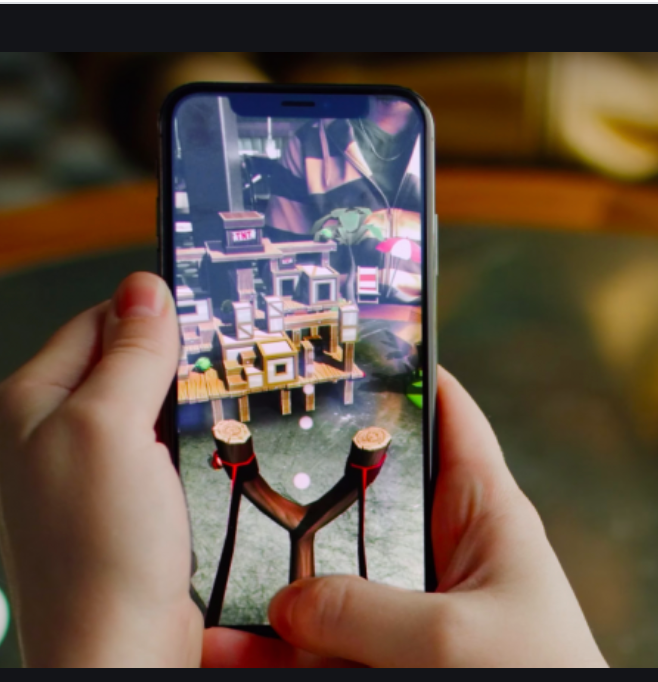

Final Project : VR Game
Title, Summary and Team Members
Title: It’s Corona Time
Summary: Use your impressive bouncing skills and shooting skills to
defeat the virus before it infects you.
By: Brian Lo, Christine Luo, Evan Sum
Problem Description
-
We don’t know how to use any game engines. We are implementing VR with
only a phone and no fancy hardware like Oculus, Vive, ect.
-
We also want to make an ability to shoot a bullet or item that will
bounce, and we want to calculate this using ray tracing or ray
casting.
-
We will also be trying to create our own textures and our own models
through Autodesk Maya.
Goals and Deliverables
What we plan to deliver
-
Implement a VR shooting game with only a mobile device and no fancy
hardware like Oculus, Vive, ect. (The player would hold phone in front
of them like a window rather than hold it right in front of their
eyes)
-
Tell when a player taps on a VR object on the screen.
-
Shoot bullets from player to target when valid target tapped.
What we hope to deliver (if have time)
-
Enemies are animated and explode
-
Upgrades to weapons (piercing bullets . . .)
Why we can accomplish these goals:
-
Some of us are interested in game development and animation
-
We’ve used 2D game engines like Greenfoot before. How hard can this be
:).
-

-
The above image is a little like what we want to accomplish. The image
is an AR shooting game, but we want to do VR, so the background won’t
be real.
Measuring quality/performance
-
If you turn around 360 degrees, the virtual world should rotate with
the player and the player should return to his/her starting position.
- When a player taps on an enemy, the game detects it
-
When the game detects enemy tap, it shoots a bullet to the enemy and
destroys it
-
Our models have the correct textures on them.
-
If we have time: models are animated and explode, piercing bullets
Questions we plan to answer with our analysis
-
How we implemented the VR
-
How we detected tapping on an enemy
- How we shoot a bullet to the enemy and destroy it
- How we textured our models.
Schedule
First Week
-
Learn Unity to see how to add code to objects and add light.
-
Also, learn Maya to figure out how to create models
Second Week
-
Have a basic representation of the environment and the person in the
middle’s variables and code.
-
Finish polishing up the models of the enemies and the player.
- Start rough drafting textures to add onto the people
Third Week
-
Code some more and finalize the game’s basic mechanics or approaching
enemies and player shooting.
-
Test run the game and see what bugs there are
Fourth Week
- Add special perks or additions to make game more interesting
Resources
- Unity
-
Autodesk Maya
-
Unity and Maya tutorials